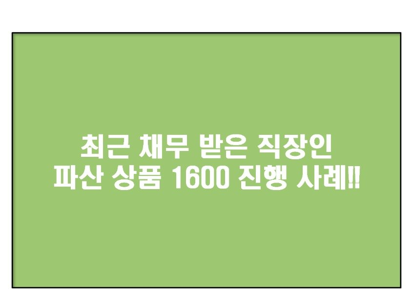
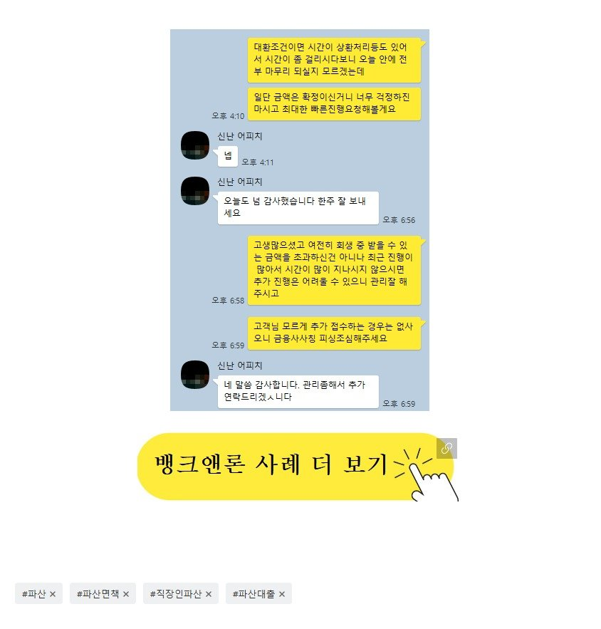

최근 채무 받은 직장인 파산 상품 1600 진행 사례!!

직장인 분의 파산상품 진행 사례를 소개해드리겠습니다.
사대가입 직장인으로 재직은 4개월 소득은 월 350만 이었습니다
파산은 면책받은지 7개월 정도
채무는 저번달에 받은 대부 2건 1000 이용 중 이었습니다.
채무가 많은 건 아니었지만 파산을 하신지 얼마 안되 신 상황이었고
때문에 저번 달 대부를 통해서 1000만원을 진행을 하시게 되었습니다.
대출을 받은지 한달 밖에 안된 시점이었기에
상황에 비해 아주 쉬운 상황은 아니었습니다.
최근에 접수해보지 않았던 금융사들 쪽으로 접수를 해드렸으며
다행히 한 곳에선 기존 채무 2건에 1000만원 정리조건으로
800 + 800이 나오셨습니다.
보통 채무가 발생한지 얼마 안되셨다면 통합조건으로 쉽지는 않은편인데,
부채비율이 높지않아 금융사 쪽에선 긍정적으로 본 덕분인 거 같았습니다.
채무금액이 늘긴 했지만 채무건수가 늘어난건 아니라
고객님 신용에도 유리했습니다.

https://cafe.naver.com/cityman88/309365